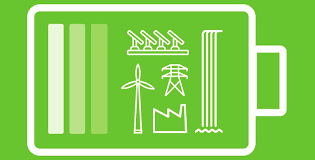
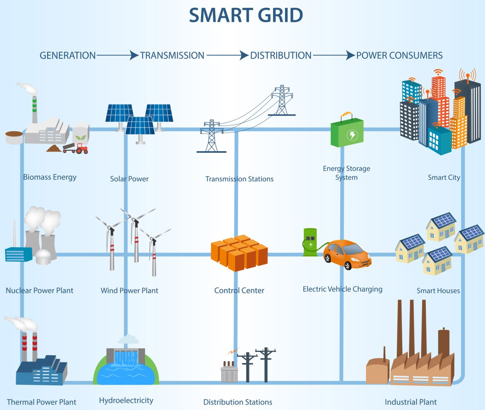
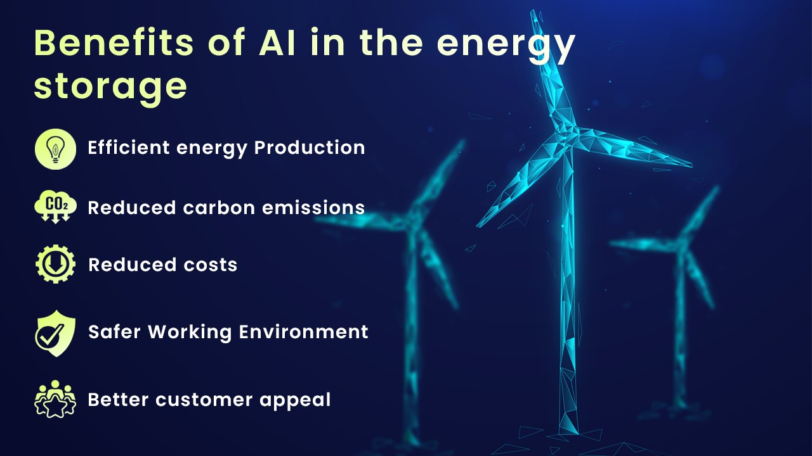
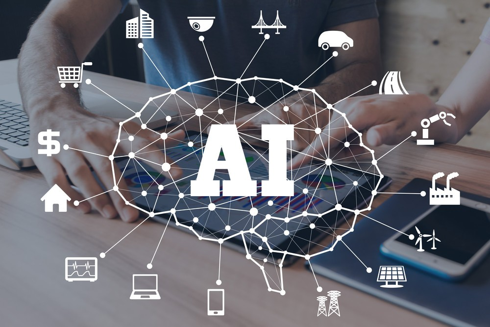

Introduction
The introduction of artificial intelligence (AI) in energy storage heralds a groundbreaking era of innovation and efficiency in the power sector. AI's integration into energy storage systems has unlocked unprecedented capabilities, allowing for real-time monitoring, intelligent optimization, and predictive analytics.
By leveraging AI algorithms, energy storage facilities can dynamically adapt their operations to varying demand patterns, grid conditions, and renewable energy availability. This synergy empowers utilities, industries, and consumers to harness energy more intelligently, reduce costs, and contribute to a cleaner and more sustainable energy ecosystem. As AI continues to evolve, its role in energy storage is set to reshape the way we generate, manage, and utilize power, paving the way for a smarter, greener, and more resilient energy future.
Understanding Energy Storage

Energy storage plays a critical role in shaping the future of sustainable energy systems. It involves capturing and storing excess energy generated during periods of low demand and making it available when demand is high or renewable sources are intermittent. By utilizing various technologies like batteries, pumped hydro, compressed air, and thermal storage, energy storage addresses the challenge of balancing supply and demand, stabilizing grids, and maximizing the utilization of renewable resources. This understanding of energy storage is essential for creating a more reliable, efficient, and flexible energy infrastructure that supports our transition to a cleaner and more sustainable energy future.
The Rise of AI in Energy Storage
The rapid rise of artificial intelligence (AI) is revolutionizing the field of energy storage, ushering in a new era of efficiency, optimization, and sustainability. AI is playing a pivotal role in transforming how we manage and utilize energy storage systems. By harnessing the power of advanced algorithms and machine learning, AI enables real-time monitoring, predictive analytics, and dynamic control of energy storage assets. This technology empowers grid operators to make intelligent decisions based on data-driven insights, optimizing the charging and discharging of batteries to match demand patterns and grid conditions. Moreover, AI-driven energy storage systems can enhance the integration of renewable energy sources, mitigating the challenges posed by their inherent intermittency.

The versatility of AI extends to battery management, where it enhances performance, extends lifespan, and ensures safe operation. AI algorithms can assess battery health, identify degradation patterns, and implement adaptive strategies to prolong battery life. These capabilities are particularly crucial in electric vehicle (EV) batteries, ensuring optimal charging practices and maintaining overall battery health. Furthermore, AI-driven energy storage solutions enable the creation of virtual power plants, aggregating distributed energy resources for grid stabilization and enabling demand response programs.
As AI technologies continue to evolve, they facilitate the seamless integration of energy storage into smart homes, industrial complexes, and smart cities. AI algorithms optimize energy consumption, storage, and distribution, leading to reduced costs, increased energy efficiency, and minimized environmental impact. The rise of AI in energy storage signifies a paradigm shift in how we manage and utilize energy, unlocking unprecedented levels of flexibility, resilience, and sustainability in our quest for a cleaner and more energy-efficient future.
Key Benefits of AI in Energy Storage
The integration of artificial intelligence (AI) in energy storage systems brings forth a multitude of key benefits that are poised to revolutionize the way we generate, store, and distribute energy. One of the most significant advantages lies in the enhanced efficiency and optimization of energy storage operations. AI algorithms continuously analyze real-time data from various sources, such as energy demand, weather patterns, and grid conditions, to dynamically adjust the charging and discharging of batteries. This ensures that energy storage assets are utilized at their optimal capacity, reducing wastage and maximizing overall system efficiency.

Predictive analytics powered by AI enable accurate forecasting of energy demand and supply, enabling grid operators to proactively manage energy fluctuations and mitigate the challenges posed by the intermittency of renewable energy sources. This, in turn, leads to improved grid stability and reliability. AI-driven energy storage systems also facilitate peak shaving and load leveling, allowing businesses and utilities to reduce their energy consumption during high-demand periods and avoid costly peak electricity prices.
Moreover, AI plays a pivotal role in extending the lifespan of energy storage systems. By continuously monitoring and analyzing battery performance, AI algorithms can identify degradation patterns and implement adaptive charging and discharging strategies that minimize stress on the battery cells. This not only ensures the longevity of the storage infrastructure but also contributes to cost savings by reducing the frequency of battery replacements.
The application of AI in energy storage also unlocks the potential for autonomous and decentralized energy management. Smart homes and buildings equipped with AI-driven energy storage solutions can make real-time decisions about when to draw power from the grid when to use stored energy, and when to feed excess energy back to the grid. This level of automation not only optimizes energy usage but also empowers consumers to actively participate in demand-side management and contribute to a more balanced and resilient energy ecosystem.
Use of AI in energy storage applications
The use of artificial intelligence (AI) in energy storage applications marks a transformative leap forward in the energy sector. AI-driven algorithms are being harnessed to optimize every aspect of energy storage, from efficient charge and discharge cycles to predictive maintenance and grid integration. In renewable energy systems, AI analyzes weather patterns and consumption data to determine the most optimal times for energy storage and release, thereby maximizing the utilization of clean energy sources and minimizing reliance on conventional power generation.

Furthermore, AI-enabled energy storage systems contribute to grid stability by responding in real-time to demand fluctuations, reducing strain during peak hours, and enhancing overall grid resilience. As AI technology advances, its role in energy storage applications promises to accelerate the transition to a sustainable and decentralized energy landscape, ultimately shaping a more reliable, efficient, and eco-friendly energy future.
Conclusion
As the energy landscape evolves, AI stands as a pivotal tool in revolutionizing energy storage. Its ability to enhance efficiency, reliability, and sustainability reinforces its role as a driving force in our transition to a cleaner energy future.